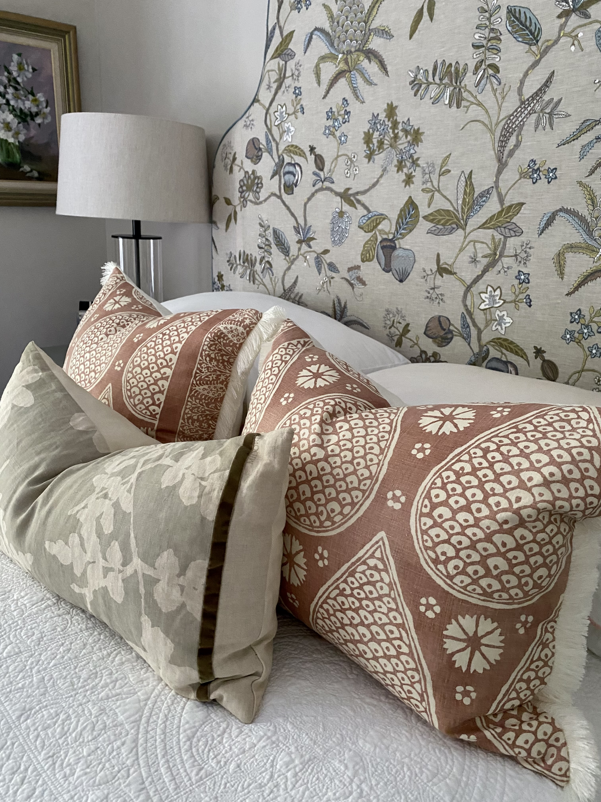
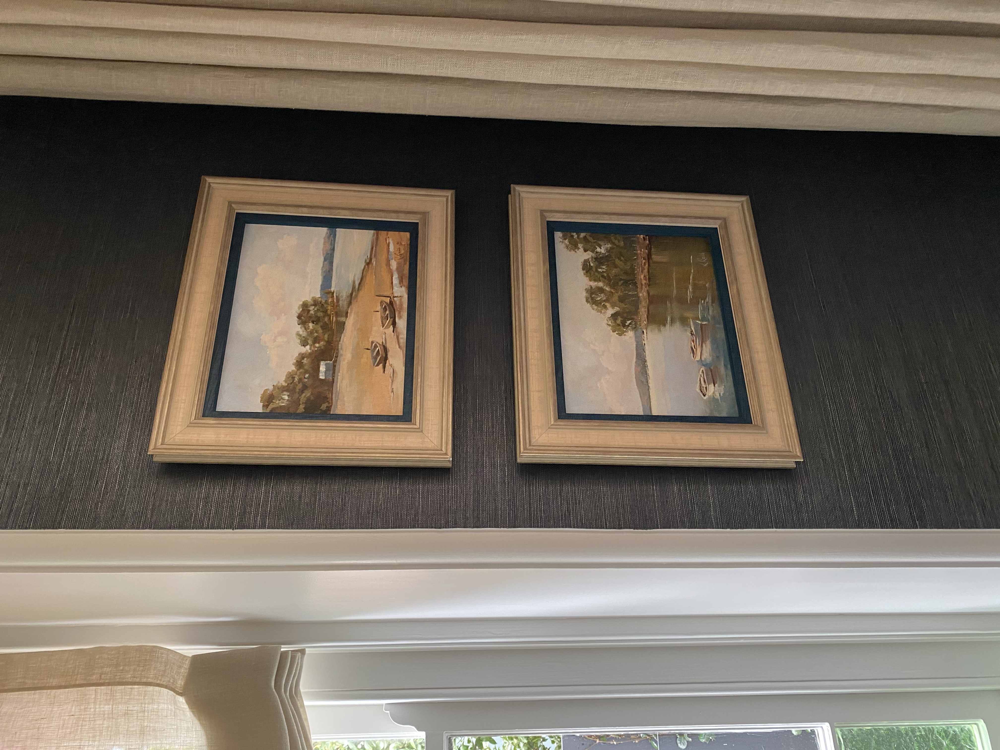
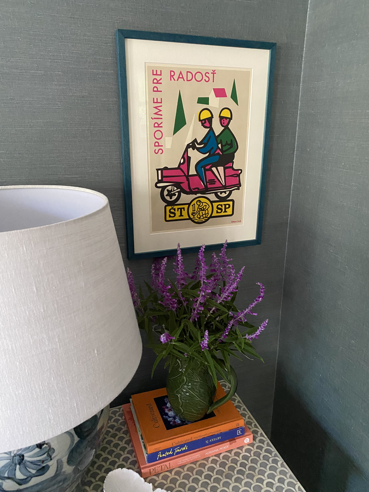
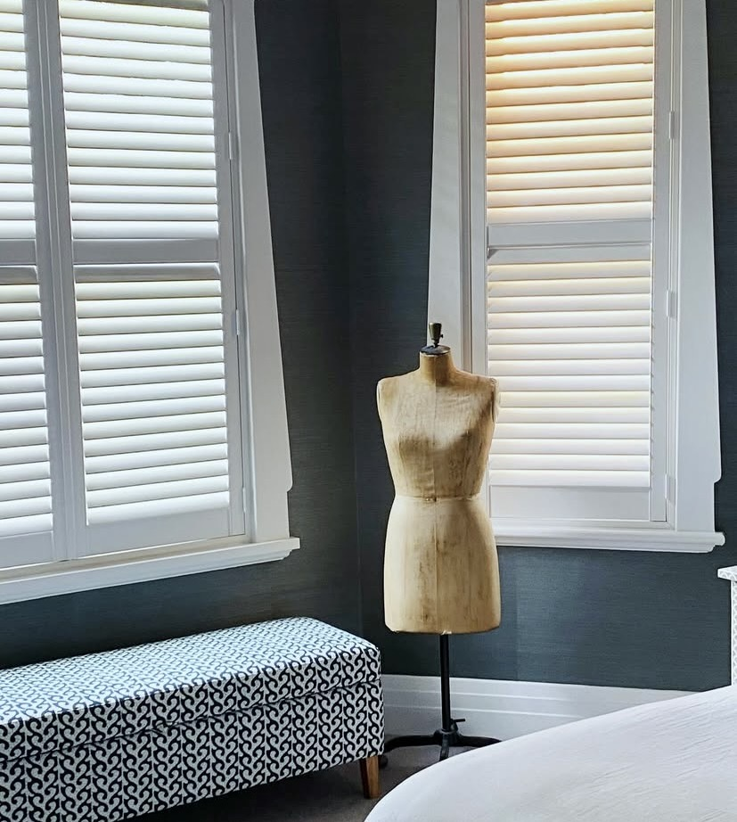
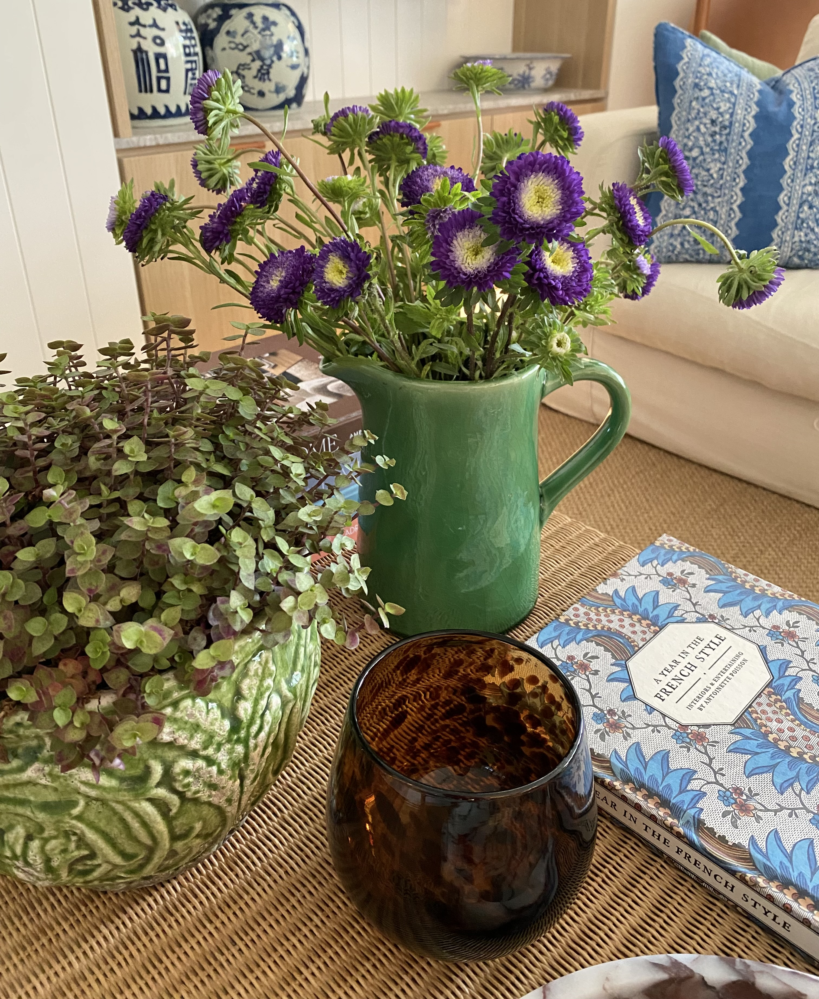
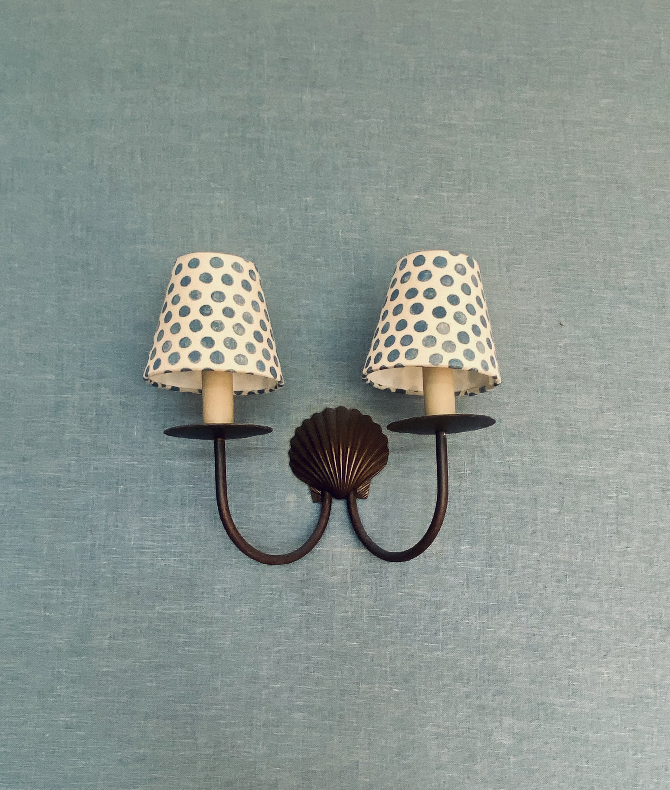

Layering is one of those concepts that sounds intuitive until you are standing in a furnished room that still feels flat, wondering what is missing. The sofa is right. The rug is right. The paint colour is considered. And yet something remains unresolved.
What is usually absent is depth: the accumulation of decisions made at different scales, in different materials and at different distances from the eye. Layering is not about adding more. It is about building a room the way a good composition is built, with intention, sequence and an understanding of how each element relates to the whole.
Here is how to approach it.
Start with what cannot easily be changed
The foundation of any room is its architecture: the proportions, the natural light, the floor, the ceiling height, the position of windows and doors. These are the fixed elements you are working with and around. Before any furniture is selected or any colour chosen, it pays to understand what the room is already doing: where the light falls in the morning, where the eye is drawn on entry, which walls carry the most visual weight.
A considered foundation layer might mean refinishing floorboards rather than covering them, selecting a paint finish that responds to the quality of light rather than simply a colour you love in isolation, or acknowledging that the architecture itself is doing enough and restraint is the right response.
This layer is rarely the most exciting, but it is the one everything else rests on.
Build the furniture layer with scale in mind
Furniture is where most rooms go wrong: not through poor taste, but through a misreading of scale. A sofa that is slightly too small for the space, a coffee table that sits too low, a dining table that does not allow for comfortable circulation. These are the decisions that create a room that feels off without anyone being able to say quite why.
When selecting furniture, consider the room as a whole rather than piece by piece. Think about sightlines: what you see from the entry, from the sofa, from the kitchen. Consider balance, not symmetry necessarily, but a sense that the visual weight of the room is distributed in a way that feels resolved.
Proportion, more than any other quality, is what separates a considered room from one that has simply been furnished.

Introduce textiles to soften and ground
Textiles are where a room begins to feel like a home rather than a showroom. A rug that anchors the furniture grouping, curtains that puddle slightly at the floor, a throw over the arm of a chair: these are the elements that bring warmth and tactility into a space.
Layering textiles well means mixing weight and texture: a wool rug beneath a cotton slipcover, a velvet cushion against linen, a linen curtain that filters rather than blocks the light. It also means allowing for some repetition. Carrying a colour or material through more than one element in a room creates cohesion without rigidity.
Cushions deserve particular attention. They are one of the most effective and least expensive ways to shift the feeling of a room, and yet they are frequently overdone. Fewer, larger cushions in considered fabrics will almost always read better than a collection of smaller ones competing for attention.

Consider wallpaper as a layer, not a statement
Wallpaper is one of the most misunderstood tools in residential interiors. It tends to be treated as a feature: something bold applied to a single wall to create impact. Its more interesting use is altogether quieter: as a layer of texture and depth that changes the quality of a room without necessarily making a huge statement.
A grasscloth wallpaper in a tone close to the paint colour, a subtle linen weave in a bedroom, a fine stripe in a hallway that makes the proportions read taller: these are applications where wallpaper is doing the same work as a beautiful plaster finish or a considered timber panel. The surface becomes more interesting, the light falls differently, and the room gains an extra dimension it would not otherwise have.
This is not to say that pattern has no place. A considered botanical, a refined geometric or an archival print applied with confidence can be transformative. But the key word is considered. The most successful wallpapered rooms tend to be those where the pattern serves the room rather than competes with everything else in it. If the furniture, textiles and objects are already doing a great deal, a quieter wallpaper will allow them to breathe. If the room is otherwise restrained, a more expressive paper can carry the weight with ease.
It is also worth remembering that wallpaper aged well is one of the great pleasures of a considered interior. A linen or grasscloth that softens slightly over time, a print that becomes more familiar with each season: these are finishes that reward patience in a way that paint rarely does.

Add objects with restraint and intention
This is the layer most people find difficult, and the one most responsible for the difference between a room that looks styled and one that looks lived in.
Objects include artwork, books, vessels, sculptural pieces, collected items and anything placed on a surface with the intention of being seen. The temptation is to fill: to cover every shelf, to fill every surface, to ensure nothing feels empty. But it is often the spaces between objects that give them their presence.
A useful starting point is to group rather than scatter. Three objects of varying height on a shelf will almost always read better than six objects of similar scale placed at intervals. Consider the relationship between objects: material, colour, form, and allow negative space to do some of the work.
Artwork is its own discipline. As a general principle: hang it lower than you think, larger than you think, and with more confidence than you feel. A single well-chosen piece, properly scaled and properly hung, will do more for a room than a gallery wall assembled from indecision. If a piece is not large enough to fill a space, always hang it off-centre and use a doorframe or piece of furniture to anchor it.

Make room for vintage and heirloom pieces
There is something a newly furnished room often lacks that no amount of careful selection can entirely manufacture: the sense of time. A room assembled entirely from current retail, however well chosen, will always carry a certain sameness. What breaks that quality, and what gives a space genuine character and warmth, is the presence of pieces that come from elsewhere.
Vintage and heirloom pieces do this in a way nothing else quite can. An inherited timber armoire, a set of chairs reupholstered in a considered fabric, a painting passed down through a family or found in an antique market: these are the objects that hold memory and irregularity in equal measure. They are not perfect, and that is precisely the point.
The skill is in integration rather than collection. A single significant vintage piece in an otherwise contemporary room will often read better than a room assembled from many vintage finds, which can tip easily into feeling themed or collected rather than lived in. Think about what the piece brings to the room beyond its visual quality: scale, material contrast, the sense of age against something newer and cleaner.
Heirloom pieces, in particular, are worth reconsidering before they are moved on. A piece of furniture that belonged to a grandparent, a set of silverware, a rug brought back from overseas: these carry a quality of specificity that no amount of retail browsing can replicate. Reupholstery, refinishing or simply a change of context is often all a piece needs to feel at home in a contemporary interior.
The rooms that are hardest to forget are almost always the ones that contain something irreplaceable. That quality is worth seeking out, and worth making room for.
Layer the light
Rooms that rely on a single overhead light source will always feel flat, regardless of how well everything else has been considered. Good lighting design is about building layers: ambient light from pendants or downlights, task lighting from floor lamps or reading lights, and accent lighting that picks out specific objects or surfaces.
Table lamps are one of the most underused tools in residential interiors. Placed at seated eye level, they create warmth and intimacy in a way that ceiling lighting simply cannot replicate. A room with three light sources operating at once will feel entirely different to the same room lit from above.
If you are undertaking a renovation, consider the lighting plan early: it is far easier to rough in additional circuits during construction than to add them afterwards. If you are working with an existing space, a well-placed floor lamp or a pair of table lamps will shift the mood of a room more dramatically than almost any other single change.

Bring in organic elements last
The final layer is the one that signals a room is inhabited: organic elements, botanicals, branches, stone, timber, anything that introduces irregularity and life into a space that might otherwise feel too resolved.
A single generous arrangement in an oversized vessel, a bowl of stones collected somewhere meaningful, a piece of driftwood on a shelf: these are the elements that resist being too perfect. They are also the ones that change with the seasons and with your life, which is part of what makes a room feel like it belongs to someone.
It is worth noting that this layer works best when it is not overdone. A room full of plants is a different proposition to a room with one or two well-placed ones. As with everything in layering, the question is not how much, but where and why.

Knowing when to stop
Perhaps the most important aspect of layering is the editing that happens throughout and at the end of the process. A room is not finished when everything has been added: it is finished when nothing more needs to be removed.
This requires a degree of objectivity that can be hard to maintain when you are close to a space. The practice of standing in the entry and looking at the room with fresh eyes, or photographing it and reviewing the image rather than the room itself, can help create the necessary distance.
What you are looking for is a sense of ease: a room where the eye can move without interruption, where each element has its own space and purpose, and where the whole is more settled than the sum of its parts.
That quality, that sense of completeness, is what layering, done well, reliably produces.